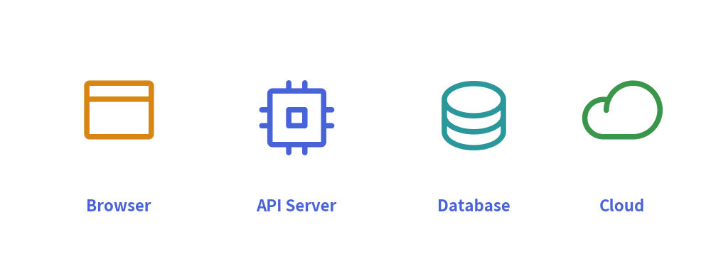
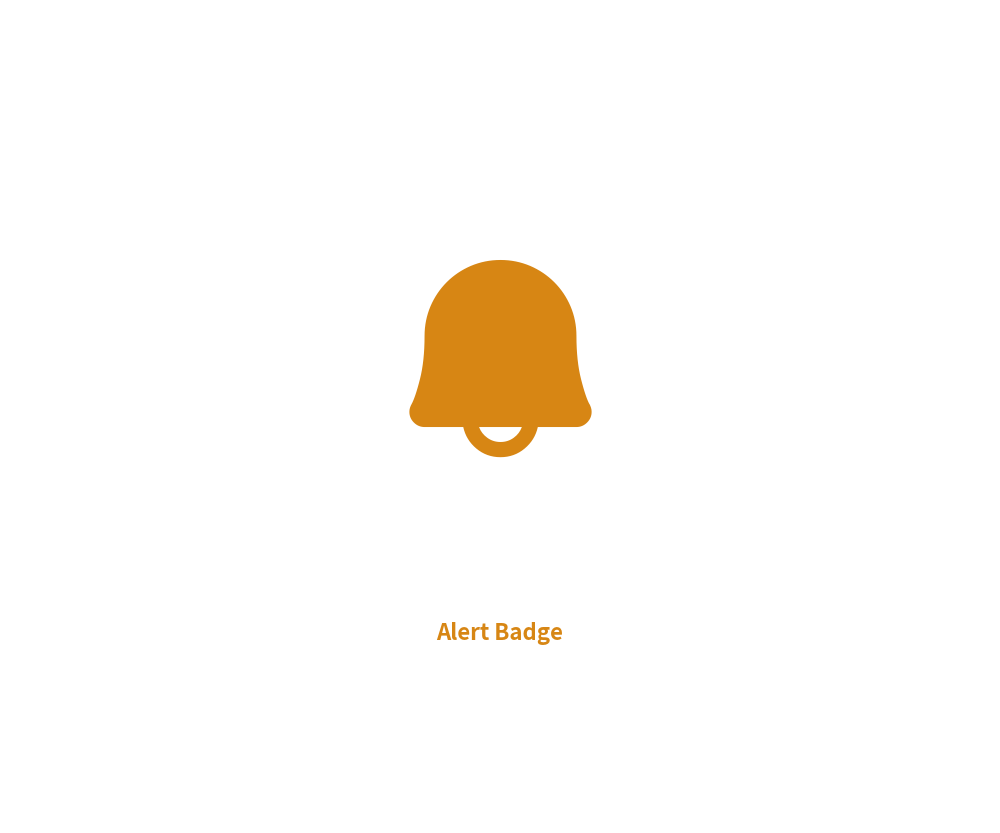
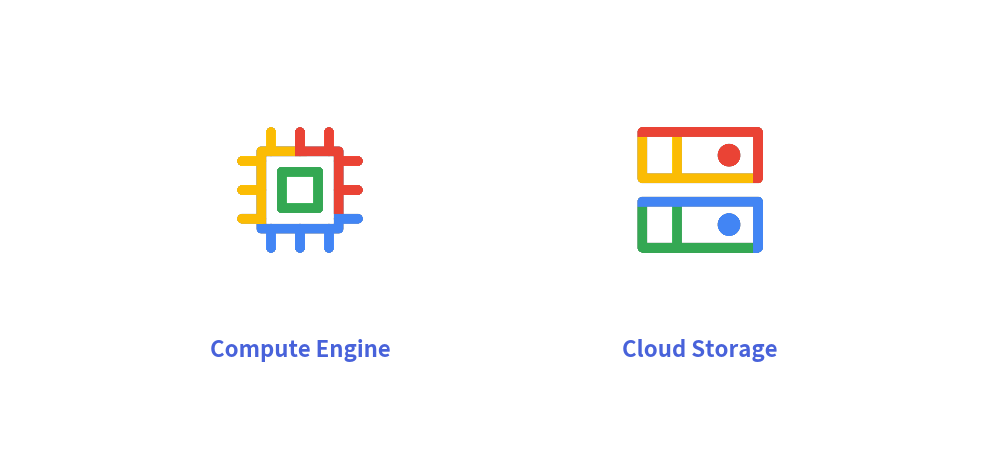

Standardized Icons
Icons serve as immediate visual anchors in technical diagrams. A cloud architecture schema or system diagram with crisp, standardized icons communicates topology, data flow, and technology stacks at a glance.
Drawlib bundles two production-grade icon libraries via drawlib.icons:
- Phosphor Vector Icons (
phosphor): Over 1,500 razor-sharp vector glyphs across 5 typographic weights. - Google Cloud Architecture Icons (
gcp): Over 260 official multi-color GCP cloud infrastructure icons.
1. Overview of Icons

2. Phosphor Vector Icons (drawlib.icons.phosphor)
Phosphor (https://phosphoricons.com) provides an extensive set of clean, consistent vector icons.
Function Signature
Every icon is exposed as a function named after the icon:
phosphor.<icon_name>(
xy: tuple[float, float],
width: float,
angle: float = 0.0,
style: Style | str | None = None,
)
xy: Center coordinate anchor point.width: Width in virtual coordinate units (height scales proportionally to maintain a 1:1 aspect ratio).angle: Counter-clockwise rotation angle.style: Tint color and visual style.
The Five Typographic Weights
Phosphor icons support 5 distinct weights controlled via Style(icon_style="..."):
"thin"(default): Ultra-fine stroke for subtle indicators."light": Clean, delicate line for dense diagrams."regular": Balanced standard stroke."bold": Prominent heavy stroke for primary entities."fill": Solid filled silhouette for active states or alert badges.
from drawlib.canvas import save, setup
from drawlib.icons import phosphor
from drawlib.styles import Styles
from drawlib.text import text
setup(width=60, height=50)
# Solid filled bell icon
phosphor.bell((30, 28), width=14, style=Styles.accent.patch(icon_style="fill"))
text((30, 12), "Alert Badge", style=Styles.accent_bold)
save()

3. Google Cloud Architecture Icons (drawlib.icons.gcp)
For cloud topology illustrations, Drawlib provides official Google Cloud graphics:
from drawlib.canvas import save, setup
from drawlib.icons import gcp
from drawlib.styles import Styles
from drawlib.text import text
setup(width=100, height=45)
gcp.compute_engine((30, 26), width=14, style=Styles.primary)
text((30, 10), "Compute Engine", style=Styles.bold)
gcp.cloud_storage((70, 26), width=14, style=Styles.primary)
text((70, 10), "Cloud Storage", style=Styles.bold)
save()

Key features:
- Official Multicolor Graphics: Renders authentic Google Cloud service colors out of the box.
- On-Demand Caching: High-resolution PNG assets are downloaded on demand from GitHub Releases upon first use, keeping the initial package footprint minimal.
4. Universal Font Icons (font_icon)
For custom or third-party vector icon sets (such as FontAwesome):
from drawlib.icons import font_icon
from drawlib.styles import Styles
font_icon(
xy=(50, 50),
icon="fa-brands fa-github",
width=12,
style=Styles.primary_bold,
)
[!TIP] In architectural system diagrams, use high-level Architecture Diagrams to connect icons automatically with aligned labels and wire routing.